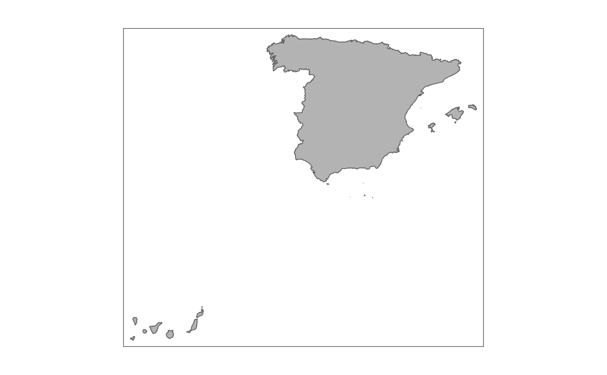
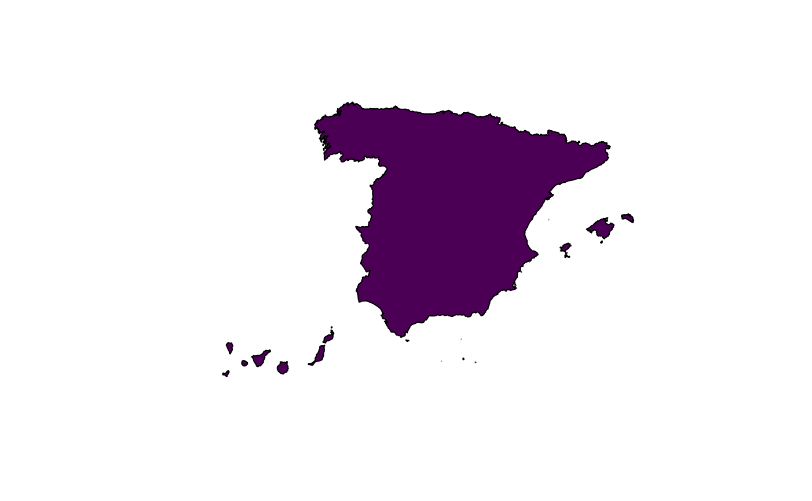

Returns the boundaries of Spain as a single sf polygon at a
specified scale.
Usage
esp_get_country(...)Argumentos
- ...
Arguments passed on to
esp_get_nutsyearRelease year of the file. One of
"2003","2006","2010","2013","2016"or"2021".epsgprojection of the map: 4-digit EPSG code. One of:
"4258": ETRS89"4326": WGS84"3035": ETRS89 / ETRS-LAEA"3857": Pseudo-Mercator
cacheA logical whether to do caching. Default is
TRUE. See About caching.update_cacheA logical whether to update cache. Default is
FALSE. When set toTRUEit would force a fresh download of the source file.cache_dirA path to a cache directory. See About caching.
verboseLogical, displays information. Useful for debugging, default is
FALSE.resolutionResolution of the geospatial data. One of
"60": 1:60million
"20": 1:20million
"10": 1:10million
"03": 1:3million
"01": 1:1million
moveCANA logical
TRUE/FALSEor a vector of coordinatesc(lat, lon). It places the Canary Islands close to Spain's mainland. Initial position can be adjusted using the vector of coordinates. See Displacing the Canary Islands.
About caching
You can set your cache_dir with esp_set_cache_dir().
Sometimes cached files may be corrupt. On that case, try re-downloading
the data setting update_cache = TRUE.
If you experience any problem on download, try to download the
corresponding .geojson file by any other method and save it on your
cache_dir. Use the option verbose = TRUE for debugging the API query.
Displacing the Canary Islands
While moveCAN is useful for visualization, it would alter the actual
geographic position of the Canary Islands. When using the output for
spatial analysis or using tiles (e.g. with esp_getTiles() or
addProviderEspTiles()) this option should be set to FALSE in order to
get the actual coordinates, instead of the modified ones.
Véa también
Other political:
esp_codelist,
esp_get_can_box(),
esp_get_capimun(),
esp_get_ccaa(),
esp_get_gridmap,
esp_get_munic(),
esp_get_nuts(),
esp_get_prov()
Ejemplos
OriginalCan <- esp_get_country(moveCAN = FALSE)
# One row only
nrow(OriginalCan)
#> [1] 1
library(ggplot2)
ggplot(OriginalCan) +
geom_sf(fill = "grey70")

# Less resolution
MovedCan <- esp_get_country(moveCAN = TRUE, resolution = "20")
library(ggplot2)
ggplot(MovedCan) +
geom_sf(fill = "grey70")
